Evidencias arquitectónicas de los Talleres Gabilondo
Esta página cataloga las piezas de hierro fundido y forjado atribuidas a los talleres de la familia Gabilondo en Valladolid y su entorno, organizadas por etapa empresarial. Las marcas de fundición conservadas en las piezas constituyen documentos históricos que permiten fechar la actividad industrial de cada período.
Los cuatro períodos
| Período | Denominación | Años | Sello característico |
|---|---|---|---|
| I | Hermanos Gabilondo / Agustín Gabilondo | hasta 1870 | Sin sello documentado |
| II | Leto Gabilondo | 1870–1897 | Leto Gabilondo Constructor Valladolid |
| III | Viuda de Leto Gabilondo (Elvira Manso) | 1897–1904 | Viuda de Leto Gabilondo Constructor Valladolid |
| IV | Talleres de Fundición Gabilondo S.A. | desde 1904 | Talleres de Fundición Gabilondo. Canal del Duero |
Período I — Hermanos Gabilondo (hasta 1870)
HG-001 · Puerta de los paseos del Prado de la Magdalena
| Campo | Dato |
|---|---|
| Tipo | Puerta de cierre de espacio público |
| Ubicación | Paseos del Prado de la Magdalena, barrio San Isidro, Valladolid |
| Material | Hierro (barra forjada y ensamblado soldado) |
| Dimensiones | 366 × 137 cm (aprox.) |
| Estado | Desaparecida |
| Inscripción | No visible / no documentada |
| Fecha | 1863 |
| Criterio | Documentación municipal (adjudicación por subasta) |
Vinculada a las primeras intervenciones documentadas de Gabilondo Hermanos en obra pública municipal. El proyecto incluía cinco piezas similares. Corresponde a la dirección de Agustín Gabilondo.
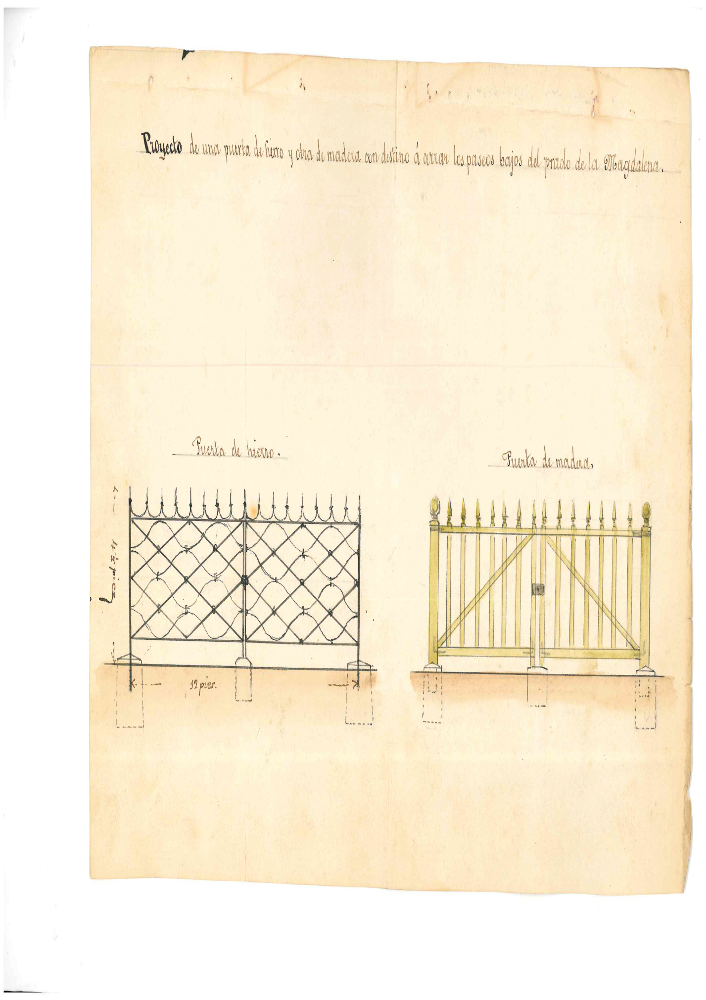
Período II — Leto Gabilondo (1870–1897)
HG-002 · Columna de la Casa Mantilla (Calle Mantilla, 1)
| Campo | Dato |
|---|---|
| Tipo | Columna estructural |
| Ubicación | C/ Mantilla, 1 — interior restaurante Miguel Ángel (planta baja) |
| Material | Hierro fundido |
| Dimensiones | Ø 35 cm × 220 cm (aprox.) |
| Estado | Buen estado, con repintes |
| Inscripción | Leto Gabilondo Constructor Valladolid — sello circular en relieve |
| Fecha | c. 1891 |
| Criterio | Fecha de construcción del edificio |
Ejemplo directo de producción de los talleres aplicada a la arquitectura urbana. El sello afirma el papel de los talleres en la transformación de Valladolid a finales del XIX. Existen 10 columnas iguales en el mismo edificio.
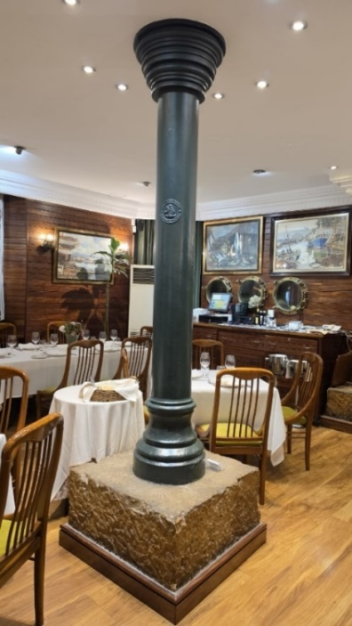
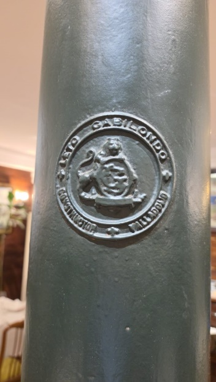
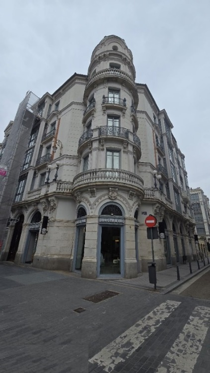
HG-003 · Columnas de la Casa Mantilla (Acera de Recoletos, 1)
| Campo | Dato |
|---|---|
| Tipo | Columna estructural |
| Ubicación | Acera de Recoletos, 1 — interior locales Zara Home y Burger King (planta baja) |
| Material | Hierro fundido |
| Dimensiones | Ø 35 cm × 220 cm (aprox.) |
| Estado | Intervenido; superficie lijada y repintada |
| Inscripción | No legible — marca eliminada por lijado |
| Fecha | c. 1891 |
| Criterio | Fecha de construcción del edificio; correspondencia tipológica con HG-002 |
La eliminación de la marca mediante lijado evidencia la pérdida progresiva de la memoria material. Existen múltiples columnas similares en el edificio, algunas con la marca conservada.
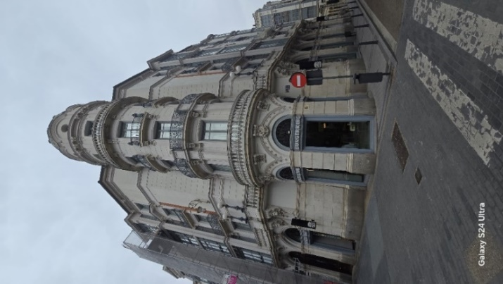
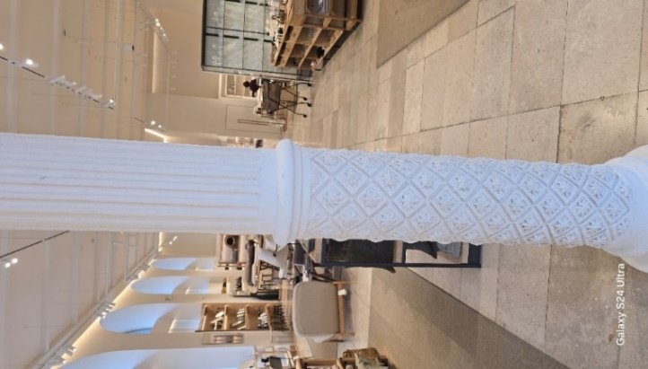
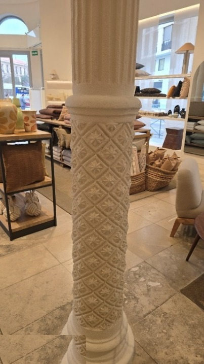
HG-004 · Bajante y celosía artística (Calle Esgueva, 12)
| Campo | Dato |
|---|---|
| Tipo | Bajante de aguas pluviales + cerramiento de balcones con celosía artística |
| Ubicación | C/ Esgueva, 12 — entorno Universidad-San Pablo |
| Material | Hierro fundido e hierro trabajado |
| Dimensiones | Bajante Ø 12–15 cm; celosía espesor 5–10 mm |
| Estado | Inscripción legible, parcialmente empastada |
| Inscripción | Leto Gabilondo Constructor Valladolid — sello circular en relieve |
| Fecha | 1896 |
| Criterio | Fecha de construcción documentada |
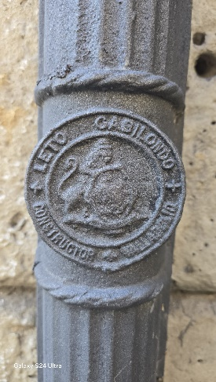
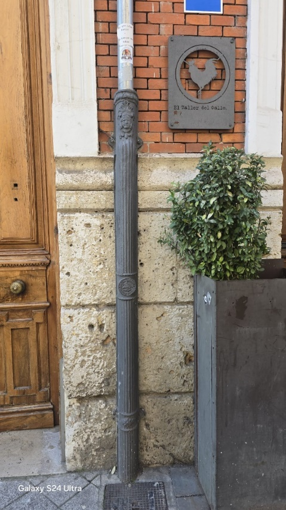
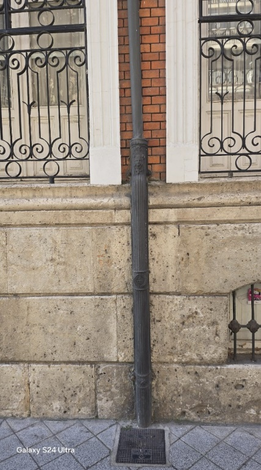
HG-005 · Bajante de aguas pluviales (Calle Esgueva, 12–16)
| Campo | Dato |
|---|---|
| Tipo | Bajante de aguas pluviales |
| Ubicación | C/ Esgueva, 12–16 — fachada exterior |
| Material | Hierro fundido |
| Dimensiones | Ø 12–15 cm; tramo 150–200 cm; espesor 5–10 mm |
| Estado | Bueno, con ligera erosión superficial |
| Inscripción | Leto Gabilondo Constructor Valladolid — sello circular en relieve |
| Fecha | 1896 |
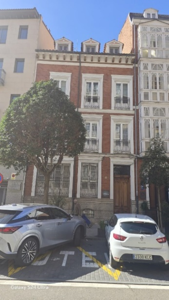
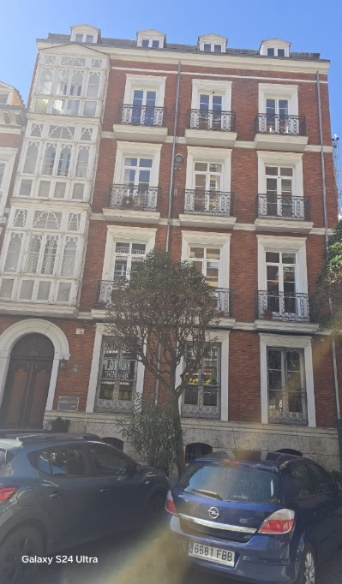
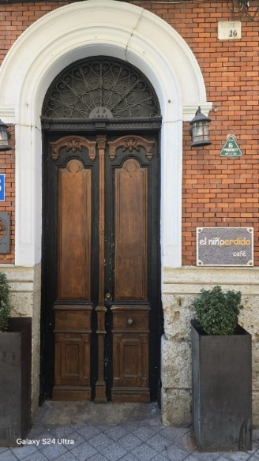
HG-006 · Dosel de filigrana en hierro (Calle Esgueva, 12)
| Campo | Dato |
|---|---|
| Tipo | Dosel de reja artística |
| Ubicación | C/ Esgueva, 12 — sobre hueco de fachada |
| Material | Hierro trabajado (forja) |
| Dimensiones | 100 cm (ancho) × 50–60 cm (alto) |
| Estado | Bueno |
| Inscripción | J.D. 1896 — integrada en el diseño del dosel |
| Fecha | 1896 |
La inscripción J.D. 1896 podría corresponder a las iniciales del propietario o promotor. En el mismo inmueble existe un bajante con la marca Leto Gabilondo Constructor Valladolid (HG-004), lo que documenta la intervención de los talleres en el edificio.
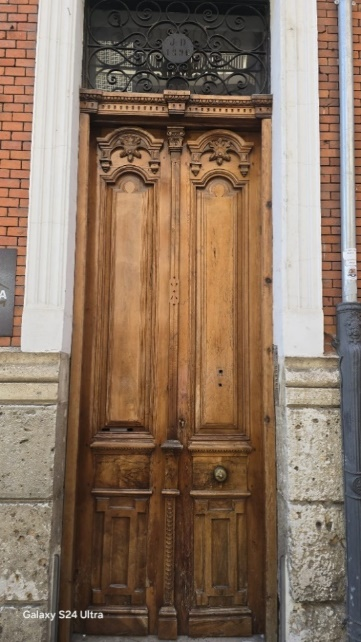
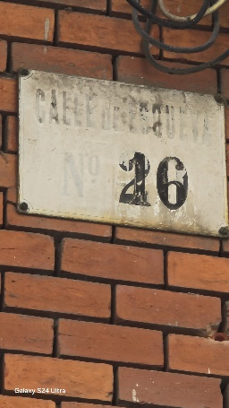
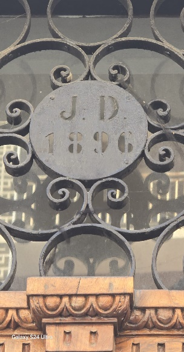
HG-007 · Dosel de filigrana en hierro (Calle de la Solanilla, 11)
| Campo | Dato |
|---|---|
| Tipo | Dosel decorativo |
| Ubicación | C/ de la Solanilla, 11 — sobre hueco de fachada |
| Material | Hierro trabajado (forja) |
| Dimensiones | 100 cm (ancho) × 60 cm (alto) |
| Estado | Bueno |
| Inscripción | Sin inscripción visible |
| Fecha | 1896 |
Presenta similitudes formales con otros doseles de forja documentados en edificios contemporáneos. Corresponde a la tecnología base que dominaba Agustín Gabilondo a su llegada a Valladolid y que la empresa desarrolló desde 1860.
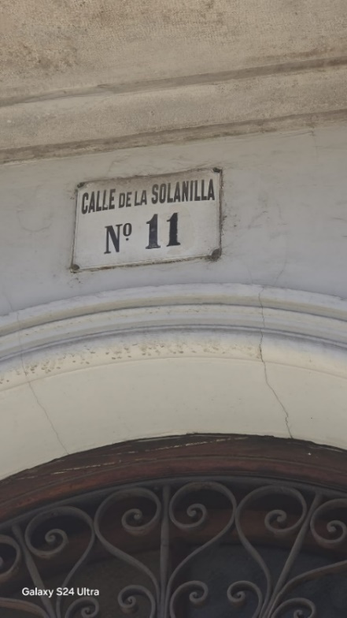
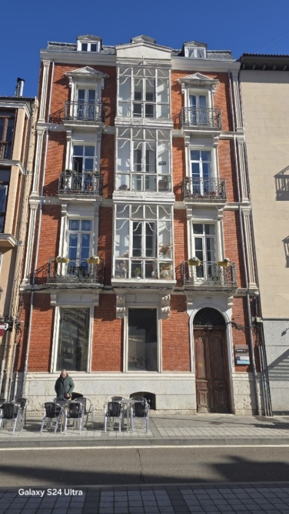
HG-008 · Bajantes de aguas pluviales (Calle de la Solanilla, 11)
| Campo | Dato |
|---|---|
| Tipo | Bajantes de aguas pluviales |
| Ubicación | C/ de la Solanilla, 11 — fachada principal |
| Material | Hierro fundido |
| Dimensiones | Ø 10–15 cm; medallón 12–18 cm |
| Estado | Bueno |
| Inscripción | Leto Gabilondo Constructor Valladolid — inscripción en relieve en anillo con medallón central |
| Fecha | 1896 |
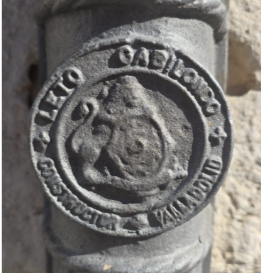
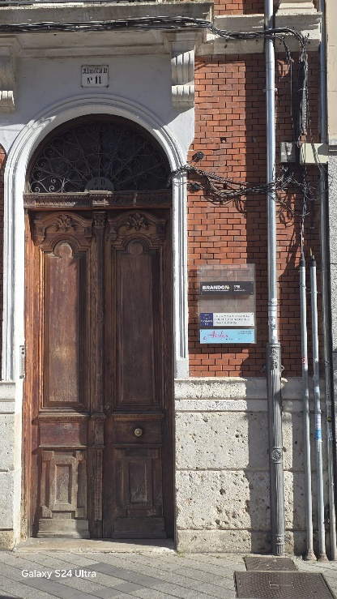
HG-009 · Bajante y celosía de filigrana (Calle Esgueva, 12 — entrada)
| Campo | Dato |
|---|---|
| Tipo | Bajante de aguas pluviales + celosía de filigrana |
| Ubicación | C/ Esgueva, 12 — sobre la puerta de entrada |
| Material | Hierro trabajado (celosía) + hierro fundido (bajante) |
| Dimensiones | Celosía: 100 × 60 cm |
| Estado | Bueno |
| Inscripción | J.D. 1896 — sello circular en el centro de la celosía |
| Fecha | 1896 |
En el mismo inmueble existe un bajante con marca Leto Gabilondo Constructor Valladolid, lo que permite atribuir el conjunto a los talleres con alto grado de probabilidad.
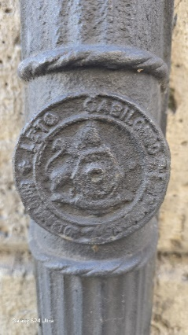
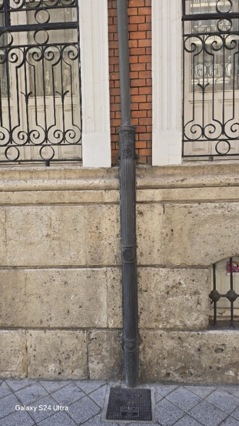
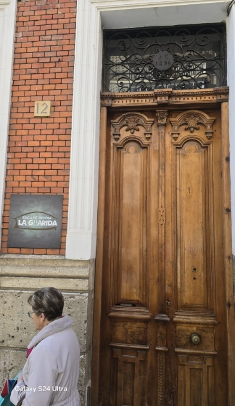
HG-012 · Bajante (Calle López Gómez, 8)
| Campo | Dato |
|---|---|
| Tipo | Bajante de aguas pluviales |
| Ubicación | C/ López Gómez, 8 — zona Centro, entorno Plaza de España |
| Material | Hierro fundido |
| Estado | Bueno; inscripción con pérdida de definición por capas de pintura |
| Inscripción | Leto Gabilondo Constructor Valladolid |
| Fecha | 1896 |
La coexistencia en la misma calle de piezas firmadas por Leto Gabilondo (c. 1896) y por Viuda de Leto Gabilondo (c. 1898 — véanse HG-010 y HG-011) evidencia una continuidad inmediata en la actividad productiva de los talleres.
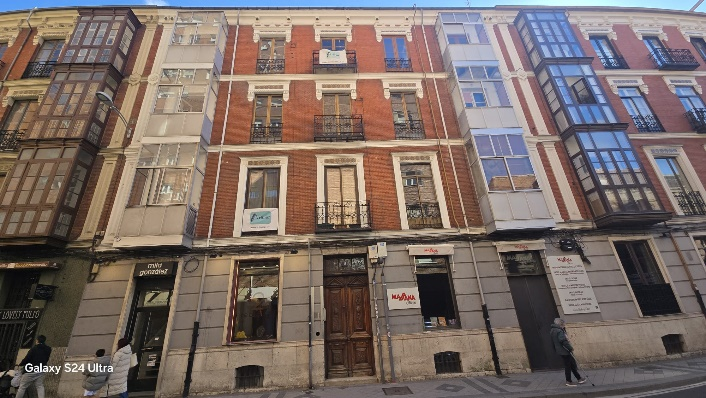
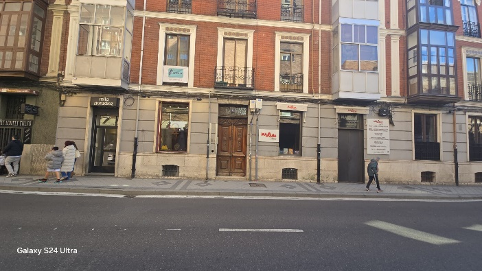
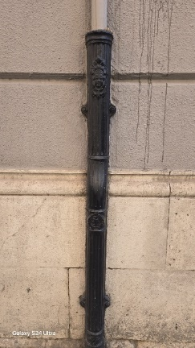
HG-013 · Balcones y adorno forjado (Calle López Gómez, 8)
| Campo | Dato |
|---|---|
| Tipo | Balcones y adorno forjado |
| Ubicación | C/ López Gómez, 8 |
| Material | Hierro fundido y forjado |
| Dimensiones | Balcón: 160 × 100 × 30 cm; celosía: 120 × 40 cm |
| Estado | Aceptable (supera su vida útil estimada de 60–100 años) |
| Inscripción | Sin marcas del constructor |
| Fecha | 1895 |
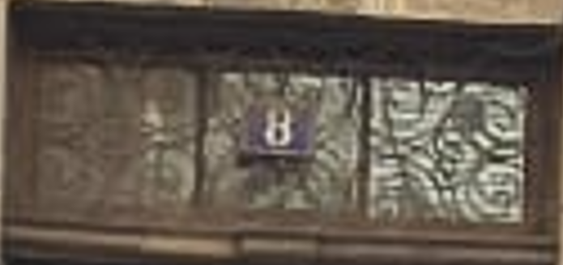
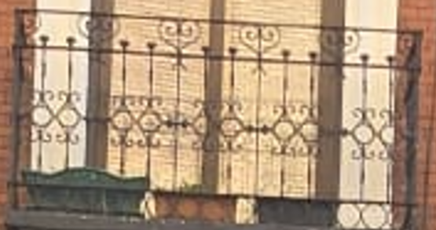
HG-014 · Dos bajantes (Calle López Gómez, 6)
| Campo | Dato |
|---|---|
| Tipo | Bajantes de aguas pluviales |
| Ubicación | C/ López Gómez, 6 — próximo a la Plaza de España |
| Material | Hierro fundido |
| Estado | Bueno |
| Inscripción | Leto Gabilondo Constructor Valladolid |
| Fecha | 1895 |
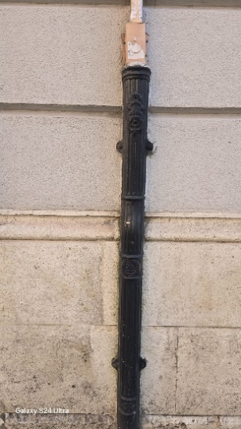
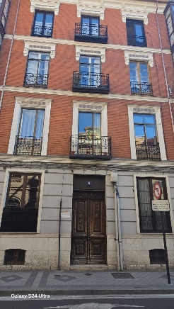
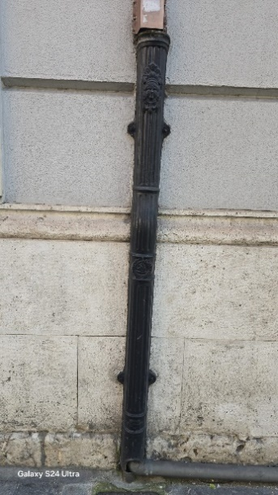
HG-015 · Balcón y decoración de puerta (Calle López Gómez, 6)
| Campo | Dato |
|---|---|
| Tipo | Balcón de protección y decoración |
| Ubicación | C/ López Gómez, 6 |
| Material | Hierro trabajado (filigrana) |
| Dimensiones | 40 × 160 × 100 cm |
| Estado | Pintado y saneado |
| Inscripción | Sin texto |
| Fecha | 1895 |
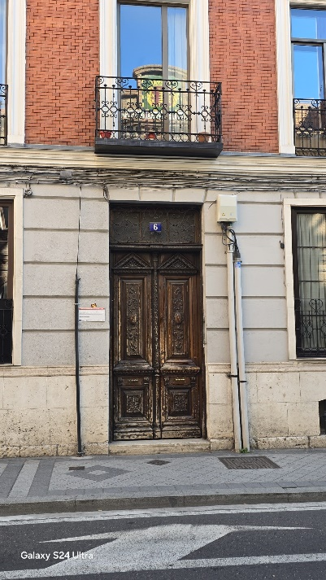
HG-016 · Dos bajantes (Calle López Gómez, 4)
| Campo | Dato |
|---|---|
| Tipo | Bajantes de aguas pluviales |
| Ubicación | C/ López Gómez, 4 — entorno Plaza de España |
| Material | Hierro fundido |
| Estado | Letras algo empastadas |
| Inscripción | Leto Gabilondo Constructor Valladolid |
| Fecha | 1896 |
El propietario del edificio declaró que la totalidad de los elementos de forja y fundición conservados en la primera planta procedería de los talleres de Leto Gabilondo (testimonio oral, con respaldo de las evidencias materiales in situ).
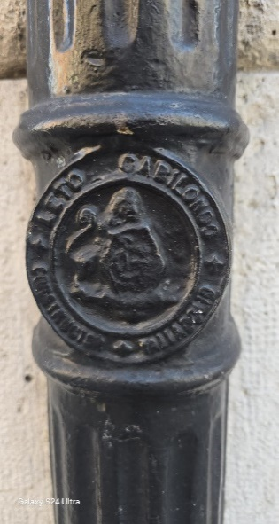
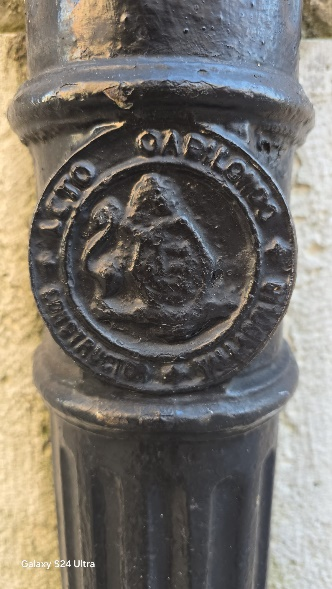
HG-017 · Bajante (Calle Miguel Íscar, 8)
| Campo | Dato |
|---|---|
| Tipo | Bajante de aguas pluviales |
| Ubicación | C/ Miguel Íscar, 8 — zona Centro, próximo a Plaza de España |
| Material | Hierro fundido |
| Estado | Mal estado de conservación |
| Inscripción | Leto Gabilondo Constructor Valladolid — inscripción circular perimetral en anillo |
| Fecha | 1896 |
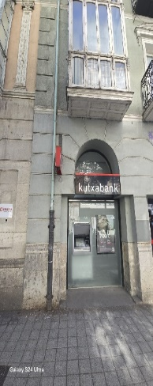
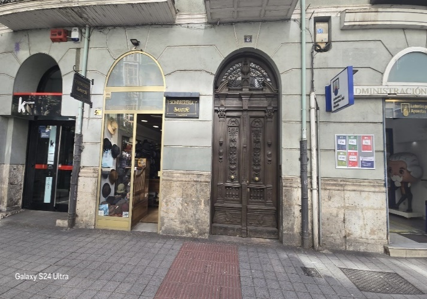
HG-018 · Balcón de hierro trabajado (Calle Miguel Íscar, 8)
| Campo | Dato |
|---|---|
| Tipo | Balcón con celosía artística |
| Ubicación | C/ Miguel Íscar, 8 |
| Material | Hierro trabajado |
| Dimensiones | 60 × 150 × 70/75 cm |
| Estado | Mal estado de conservación |
| Inscripción | Leto Gabilondo Constructor Valladolid (en el bajante asociado) |
| Fecha | 1896 |
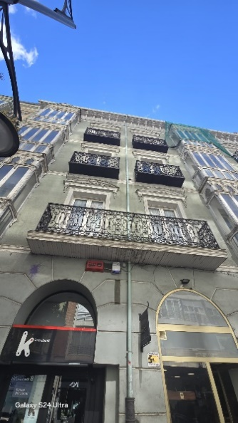
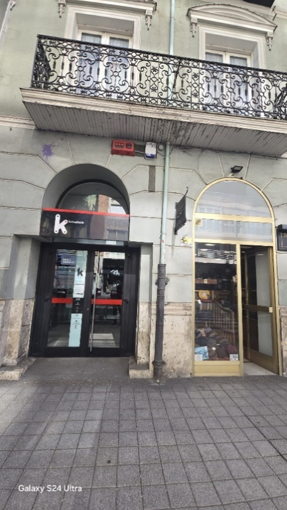
HG-019 · Celosía de filigrana en puerta (Calle Miguel Íscar, 8)
| Campo | Dato |
|---|---|
| Tipo | Celosía de filigrana |
| Ubicación | C/ Miguel Íscar, 8 |
| Material | Hierro (forja en caliente) |
| Dimensiones | 120 × 40 cm |
| Estado | Peor que otras rejas, por la elevada humedad de la calle |
| Inscripción | Sin marcas |
| Fecha | 1896 |
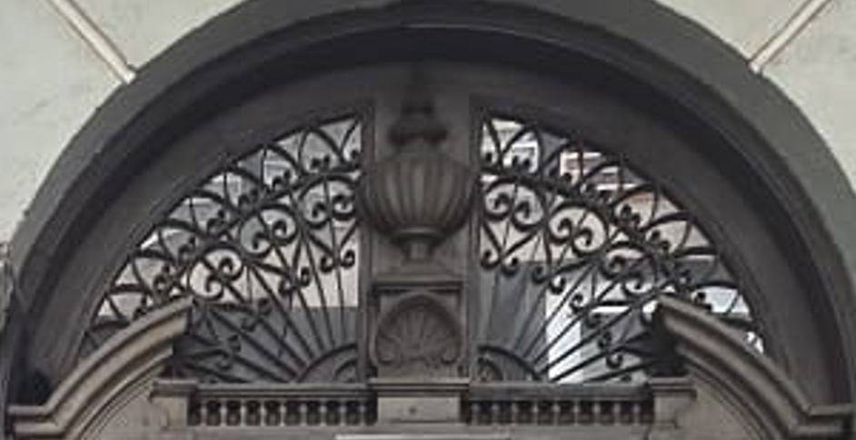
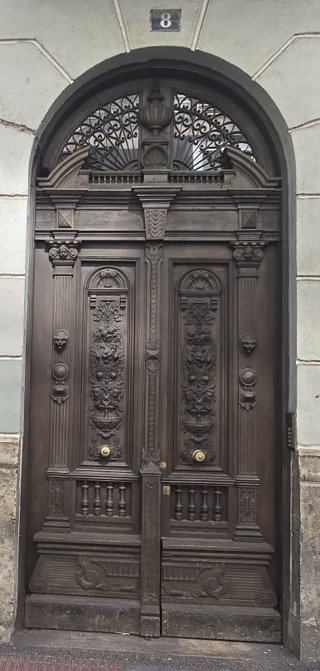
HG-022 · Plaza de toros (Paseo de Zorrilla)
| Campo | Dato |
|---|---|
| Tipo | Infraestructura urbana / equipamiento de ocio |
| Ubicación | Paseo de Zorrilla, área sur — entorno Campo Grande |
| Material | Fábrica de ladrillo con estructura con elementos metálicos |
| Aforo | 11.542 espectadores |
| Estado | Bueno (edificio en uso, con reformas posteriores) |
| Inscripción | No documentada directamente |
| Fecha | 1890 (inauguración) |
La vinculación de los talleres Gabilondo con la plaza de toros es documental, no material: en el Archivo Municipal de Valladolid consta una carta firmada por trece promotores —entre ellos Leto Gabilondo— solicitando autorización para la construcción. La aportación económica de Leto ascendió a 17.000 pesetas.
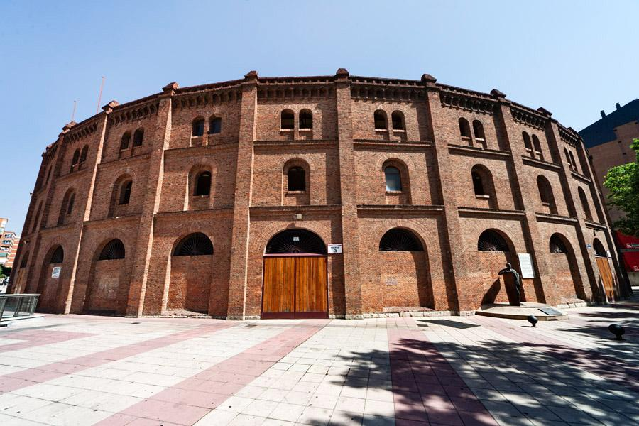
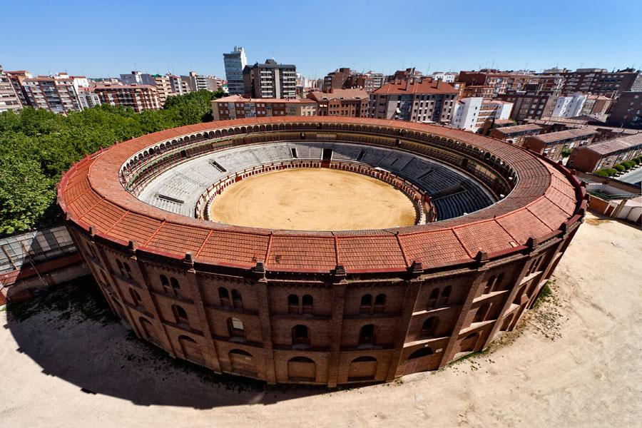
Período III — Viuda de Leto Gabilondo / Elvira Manso (1897–1904)
HG-010 · Cuatro bajantes (Calle López Gómez, 12)
| Campo | Dato |
|---|---|
| Tipo | Bajantes de aguas pluviales |
| Ubicación | C/ López Gómez, 12 — zona Centro, entorno Plaza de España |
| Material | Hierro fundido |
| Dimensiones | Ø 15 cm; tramo 150–200 cm; espesor 5–10 mm |
| Estado | Bueno, ligera erosión superficial |
| Inscripción | Viuda de Leto Gabilondo Constructor Valladolid — sello circular en relieve |
| Fecha | 1898 |
| Criterio | Fecha de construcción documentada |
Primer período bajo la dirección de Elvira Manso. La repetición de la inscripción en varios inmuebles sugiere producción seriada para el ensanche urbano.
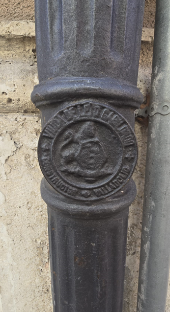
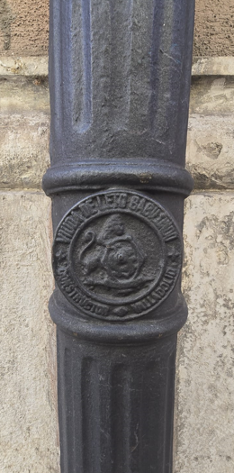
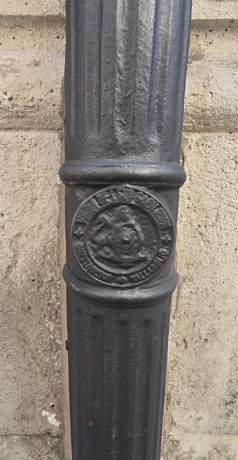
HG-011 · Dos bajantes (Calle López Gómez, 10)
| Campo | Dato |
|---|---|
| Tipo | Bajante de aguas pluviales |
| Ubicación | C/ López Gómez, 10 — zona Centro |
| Material | Hierro fundido |
| Estado | Bueno, ligera erosión superficial |
| Inscripción | Viuda de Leto Gabilondo Constructor Valladolid — sello circular en relieve |
| Fecha | 1898 |
La repetición de piezas idénticas en los números 10 y 12 de la misma calle sugiere una fase de edificación homogénea en el desarrollo urbano de la zona.
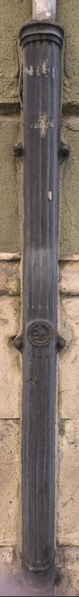
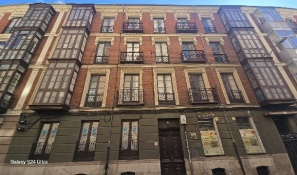
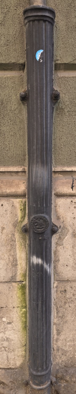
HG-023 · Columnas del Mercado del Val
| Campo | Dato |
|---|---|
| Tipo | Columnas de soporte |
| Ubicación | C/ Francisco de Zarandona, 8 — Puerta Norte |
| Material | Hierro fundido |
| Dimensiones | Ø 35 cm × 320 cm (aprox.) |
| Estado | Excelente |
| Inscripción | Viuda de Leto Gabilondo Constructor Valladolid — sello circular en relieve |
| Fecha | c. 1900 |
| Criterio | Actas del Ayuntamiento; el edificio original data de 1882 |
Se documentan 30 columnas iguales en el edificio. El sello en el resto de puertas fue tapado durante la reforma de 2016; solo el de la Puerta Norte permanece visible. La reconversión estructural del Mercado del Val representa uno de los logros técnicos más ambiciosos de la empresa bajo Elvira Manso, comparable en resolución técnica a las estructuras metálicas de la Exposición Universal de París de 1889 que visitó Leto. Elvira ni siquiera cambió el nombre de la fundición.
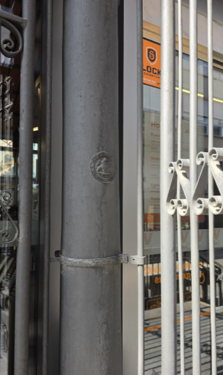
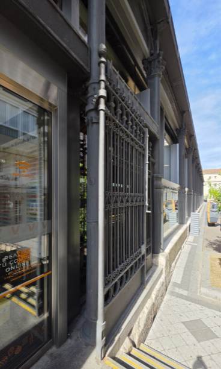
Período IV — Talleres de Fundición Gabilondo S.A. (desde 1904)
HG-020 · Tapa de registro (Campo Grande)
| Campo | Dato |
|---|---|
| Tipo | Tapa de registro de infraestructura urbana |
| Ubicación | Salida Paseo del Príncipe al Paseo de Filipinos — zona Campo Grande |
| Material | Hierro fundido |
| Dimensiones | Ø aprox. 90–100 cm |
| Estado | Bueno |
| Inscripción | Talleres de Fundición Gabilondo. Canal del Duero — sello circular en el centro |
| Fecha | c. 1905 |
Primera pieza documentada con la nueva denominación social tras la constitución de la S.A. en 1904. Inserta en las dinámicas de modernización urbana y mejora de infraestructuras de comienzos del siglo XX.
HG-021 · Farolas de la Plaza Mayor
| Campo | Dato |
|---|---|
| Tipo | Mobiliario urbano |
| Ubicación | Plaza Mayor, centro histórico, Valladolid |
| Material | Hierro fundido |
| Dimensiones | Altura estimada 4–5 m |
| Estado | Desaparecidas — solo conservados los planos en el Archivo Municipal |
| Inscripción | No documentada |
| Fecha | 1906 |
| Criterio | Adjudicación por subasta documentada |
La documentación municipal registra la adjudicación, mediante subasta pública, de 20 farolas y 32 bancos para la Plaza Mayor de Valladolid en 1906. Es uno de los ejemplos más claros de participación de los Talleres Gabilondo en contratos municipales de equipamiento urbano.
Referencia: Archivo Municipal de Valladolid — Proyecto de mobiliario urbano, Plaza Mayor, 1906 (signatura pendiente de completar).
Índice geográfico
| Código | Dirección | Período | Elemento |
|---|---|---|---|
| HG-001 | Prado de la Magdalena | I | Puerta de cierre (desaparecida) |
| HG-002 | C/ Mantilla, 1 | II | Columna estructural |
| HG-003 | Acera de Recoletos, 1 | II | Columnas estructurales |
| HG-004 | C/ Esgueva, 12 | II | Bajante + celosía |
| HG-005 | C/ Esgueva, 12–16 | II | Bajante |
| HG-006 | C/ Esgueva, 12 | II | Dosel de filigrana |
| HG-007 | C/ de la Solanilla, 11 | II | Dosel de filigrana |
| HG-008 | C/ de la Solanilla, 11 | II | Bajantes |
| HG-009 | C/ Esgueva, 12 | II | Bajante + celosía (puerta entrada) |
| HG-010 | C/ López Gómez, 12 | III | Cuatro bajantes |
| HG-011 | C/ López Gómez, 10 | III | Dos bajantes |
| HG-012 | C/ López Gómez, 8 | II | Bajante |
| HG-013 | C/ López Gómez, 8 | II | Balcones y adorno forjado |
| HG-014 | C/ López Gómez, 6 | II | Dos bajantes |
| HG-015 | C/ López Gómez, 6 | II | Balcón y decoración de puerta |
| HG-016 | C/ López Gómez, 4 | II | Dos bajantes |
| HG-017 | C/ Miguel Íscar, 8 | II | Bajante |
| HG-018 | C/ Miguel Íscar, 8 | II | Balcón con celosía |
| HG-019 | C/ Miguel Íscar, 8 | II | Celosía de filigrana |
| HG-020 | Campo Grande (Paseo del Príncipe) | IV | Tapa de registro |
| HG-021 | Plaza Mayor | IV | Farolas (desaparecidas) |
| HG-022 | Paseo de Zorrilla | II | Plaza de toros (promotor) |
| HG-023 | C/ Francisco de Zarandona, 8 | III | Columnas Mercado del Val |
Fuentes
raw/CONSTRUYENDO FICHAS.docx— fichas de campo con fotografías (fuente principal de esta página)- Talleres Gabilondo — historia de la empresa
- Leto Gabilondo — director período II
- Elvira Manso — directora períodos III y IV
- Archivo Municipal de Valladolid — actas municipales, contratos de adjudicación, proyecto Plaza Mayor 1906
Por documentar
- Signatura exacta del expediente de la Plaza Mayor (1906) en el Archivo Municipal
- Identificación de la persona o empresa detrás de las iniciales J.D. 1896 (HG-006 y HG-009)
- Localización de elementos similares en Medina del Campo
- Piezas con sello Viuda de Leto Gabilondo en otras calles del ensanche
- Estado actual de conservación de HG-017 (bajante en mal estado, C/ Miguel Íscar 8)